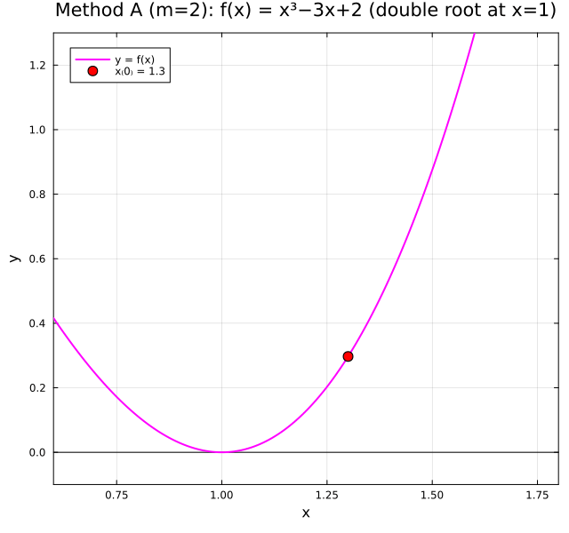
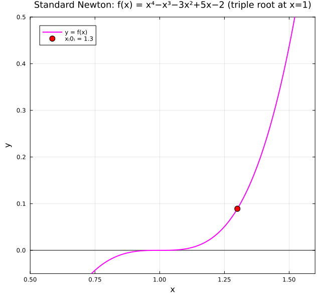

Improved Newton Method
Source inspiration: (Mathew 2000-2019).
Description
The improved Newton methods find a root \(x^*\) of \(f(x) = 0\) that has multiplicity \(m \ge 2\), meaning \(f(x) = (x - x^*)^m h(x)\) with \(h(x^*) \neq 0\), so that \(f'(x^*) = 0\). There, standard Newton-Raphson, \(x_{n+1} = x_n - f(x_n)/f'(x_n)\), still converges from a close enough start, but in general only linearly: with \(e_n = x_n - x^*\), \(|e_{n+1}| \approx \tfrac{m-1}{m}\,|e_n|\). Case 1 shows the ratio \(1/2\) at a double root and Case 3 the ratio \(2/3\) at a triple root; the computed ratios \(e_n/e_{n-1}\) reach \(0.50005\) and \(0.66680\) at the last frame.
Mathews compares three remedies. Method A (accelerated Newton) multiplies the Newton step by the known multiplicity \(m\), and Method B (modified Newton) applies Newton’s method to \(u = f/f'\), which has a simple root at \(x^*\):
\[ \text{A:}\quad x_{n+1} = x_n - m\,\frac{f(x_n)}{f'(x_n)}, \qquad \text{B:}\quad x_{n+1} = x_n - \frac{f(x_n)\,f'(x_n)}{f'(x_n)^2 - f(x_n)\,f''(x_n)}. \]
Method C (adaptive Newton) does not need \(m\). It computes \(x_{n,m} = x_n - m\,f(x_n)/f'(x_n)\), starting from the Newton step \(m = 1\), increases \(m\) while \(|f(x_{n,m+1})| < |f(x_{n,m})|\), and takes the last such point as \(x_{n+1}\). All three need \(f'\), Method B also needs \(f''\), and only Method A needs \(m\) in advance.
In general, if \(h\) is continuously differentiable near \(x^*\) and \(x_0\) is close enough, Method A converges at least quadratically, with \(e_{n+1}/e_n^2 \to h'(x^*)/\bigl(m\,h(x^*)\bigr)\). Method B, being Newton’s method at the simple root of \(u\), also converges at least quadratically for smooth enough \(f\). Case 2 and Case 4 show Method A: there \(h(x) = x + 2\), and \(e_n/e_{n-1}^2\) reaches \(0.16666\) and \(0.11111\) at the last frame, against the limits \(1/6\) and \(1/9\). On both functions Method C picks \(m = 2\) and \(m = 3\) at each step, reproducing Method A’s iterates without being told \(m\).
With the wrong multiplicity, Method A is at best linear: at a root of multiplicity \(M\), \(e_{n+1} \approx (1 - m/M)\,e_n\), so \(m = 2\) at the triple root gives the ratio \(1/3\), and \(m > M\) overshoots to the other side of the root. Method B’s \(u = f/f'\) has poles wherever \(f'\) vanishes away from a root of \(f\), such as \(x = -1\) for the function of Cases 1 and 2. And Methods A and C are built for multiplicity, not for a poor start: on \(\arctan x\), whose root is simple, both reduce to standard Newton and diverge from \(x_0 = 1.4\), just past \(x_c \approx 1.3917\) (Case 5). The animations show standard Newton and Method A; Case 5 also discusses Methods B and C.
Newton-Raphson Method covers the standard iteration and its linear rate at multiple roots, Accelerated and Modified Newton-Raphson treats Methods A and B on their own, and Halley’s Method also uses \(f''\), to converge cubically at simple roots.
Animations
Each animation below traces a Newton-type iteration: Cases 1–4 use functions with a multiple root at \(x = 1\), and Case 5 uses \(\arctan x\), which has a simple root at \(x = 0\). For standard Newton (Cases 1, 3, 5) each slanted line is the tangent at \(x_n\); for Method A (Cases 2, 4) it is the line of slope \(f'(x_n)/m\). Each slanted line runs from \((x_n, f(x_n))\) to the next iterate’s x-intercept \((x_{n+1}, 0)\), and each vertical line returns from \((x_{n+1}, 0)\) to the curve at \((x_{n+1}, f(x_{n+1}))\); together they trace the convergence path. Standard Newton-Raphson degrades to linear convergence at multiple roots; started close enough, Method A (accelerated) restores at least quadratic convergence by multiplying the Newton step by the root’s multiplicity \(m\).
Julia source scripts that generated these animations are linked under each case.
Cases 1–4 follow Examples 1 and 2 of Mathews’ Improved Newton Method module. The module’s Example 3, which compares the methods at a quadruple root, the Method B and Method C iterations of all its examples, and the caveats in Examples 1 and 2 are not animated here; Example 1’s caveat plots the rounding noise in the expanded \(f\) near the double root, and Example 2’s runs Method A with the wrong multiplicity (\(m = 2\) at the triple root), which converges only linearly.
Case 1 — Standard Newton, linear convergence (double root), \(f(x) = x^3 - 3x + 2\), \(x_0 = 1.3\)
Behavior: \(f(x) = x^3 - 3x + 2 = (x-1)^2(x+2)\) has a double root at \(x^* = 1\). Because \(f'(x^*) = 0\) at a multiple root, the standard convergence proof breaks down. Each step only halves the error rather than squaring it — the iteration creeps slowly toward \(x = 1\) over many steps.

Case 2 — Method A (accelerated, \(m=2\)), quadratic convergence, \(f(x) = x^3 - 3x + 2\), \(x_0 = 1.3\)
Behavior: Method A uses \(x_{n+1} = x_n - m \cdot \tfrac{f(x_n)}{f'(x_n)}\) with \(m = 2\) (the known multiplicity). The enlarged step compensates for the vanishing derivative at the double root, restoring quadratic convergence. Compare the rapid convergence here against the slow Case 1 — same function, same starting point, completely different speed.

Case 3 — Standard Newton, even slower convergence (triple root), \(f(x) = x^4 - x^3 - 3x^2 + 5x - 2\), \(x_0 = 1.3\)
Behavior: \(f(x) = (x-1)^3(x+2)\) has a triple root at \(x^* = 1\). The asymptotic error constant for standard Newton at an order-\(m\) root is \((m-1)/m\). For a triple root this is \(2/3\), meaning each iterate only reduces the error by \(1/3\) — even slower than the double-root case.

Case 4 — Method A (accelerated, \(m=3\)), quadratic convergence, \(f(x) = x^4 - x^3 - 3x^2 + 5x - 2\), \(x_0 = 1.3\)
Behavior: Method A with \(m = 3\) (the correct multiplicity) restores quadratic convergence at the triple root. The convergence is dramatic compared to Case 3: the animated iterates are \(1.3\), \(1.008824\), \(1.000009\) and then \(x_3\), which is within \(10^{-11}\) of the root (labelled 1.0). This illustrates Method A’s advantage: when the multiplicity \(m\) is known, the scaled step gives at least quadratic convergence to a root of any order from a close enough start. Methods B and C do not need \(m\).

Case 5 — Standard Newton diverges, \(f(x) = \arctan(x)\), \(x_0 = 1.4\)
Behavior: \(f(x) = \arctan(x)\) has a simple root at \(x^* = 0\). Newton-Raphson converges only when \(|x_0| < x_c \approx 1.3917\); starting at \(x_0 = 1.4\) — just outside that radius — each tangent line overshoots further than the previous iterate, and the iterates escape toward \(\pm\infty\). Method A with the correct multiplicity (\(m = 1\) for this simple root) is standard Newton, so it does not fix this case. Method B (Newton’s method applied to \(u = f/f' = (1+x^2)\arctan x\)) does: \(u\) is increasing and convex for \(x > 0\), so from \(x_0 = 1.4\) its iterates decrease monotonically to the root (\(0.6316\), \(0.1712\), \(0.00625\), \(3.25 \times 10^{-7}\), …). Method C does not fix it: for \(\arctan\) the \(m = 1\) step always crosses to the other side of \(0\) (\(x_{0,1} \approx -1.41\) here) and \(m = 2\) lands farther out (\(x_{0,2} \approx -4.23\), with larger \(|f|\)), so C keeps \(m = 1\) at every step and diverges exactly as standard Newton does. This is a cautionary example: Methods A and C are designed for multiplicity and do not repair a global-convergence failure like this one.